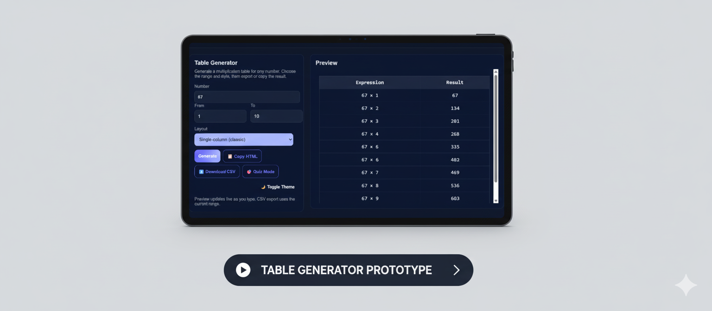

Understand loop-based table generation
with arbitrary start and end bounds
Multiplication table engine with infinite range, multi-layout output, CSV export & quiz mode

LOGIC & ALGORITHM PRACTICE PROJECT
PROJECT OVERVIEW
The Table Generator is a lightweight, front-end-only web application that computes and renders multiplication tables for any integer input. Unlike typical textbook tools that are capped at 1–10 or 1–20, this project deliberately accepts an infinite From–To range — negative, zero, or arbitrarily large integers are all valid inputs.
The project was conceived as a focused logic and algorithm practice exercise, with a clean UI built to challenge the developer's understanding of DOM manipulation, dynamic table generation, loop optimization, and edge-case handling across unbounded numeric ranges.
PROJECT OBJECTIVES
with arbitrary start and end bounds
zero, negative numbers, inverted ranges, extremely large ranges
dynamically building table rows and cells from scratch
single-column classic, grid, and expanded views
hide results and validate user answers against computed values
serialize the generated table into CSV and copyable HTML string
toggle between dark and light modes without page reload
FEATURES
From and To fields accept any integer — negative millions, zero, or positive billions. No artificial cap is enforced.
The table updates in real time as the user types. Every keystroke triggers a debounced re-render of the result panel.
Single-column classic (Expression → Result), compact grid, and a full expanded matrix view with all multiplier pairs.
Results are hidden and replaced with input fields. Users type answers and receive instant pass/fail feedback per row.
Downloads the generated table as a .csv file using the current From–To range and the entered number.
Copies a formatted HTML <table> string to the clipboard, ready to paste into any editor or document.
Switches between dark and light color schemes using CSS custom properties, with smooth transitions applied.
Gracefully handles non-numeric input, empty fields, and inverted From/To ranges with clear user messaging.
ALGORITHM DESIGN
| From | To | Rows Generated | Edge Case |
|---|---|---|---|
| 1 | 10 | 10 | — |
| −10 | 10 | 21 | Crosses zero; result sign flips at 0 |
| 0 | 0 | 1 | All results = 0 regardless of number |
| 10 | 1 | 10 (swapped) | Inverted range — normalize before loop |
| 1 | 1000000 | 1,000,000 | DOM performance / browser tab memory |
| −999 | −1 | 999 | All multipliers negative; result sign depends on number |
CORE LOGIC (PSEUDOCODE)
// ── Table Generation Engine ──────────────────────────
function generateTable(number, from, to) {
const rows = []
// Normalize inverted range
if (from > to) [from, to] = [to, from]
for (let i = from; i <= to; i++) {
rows.push({
expr: `${number} × ${i}`,
result: number * i
})
}
return rows
}
// ── DOM Renderer (Document Fragment) ─────────────────
function renderTable(rows, quizMode) {
const frag = document.createDocumentFragment()
rows.forEach(({ expr, result }) => {
const tr = document.createElement('tr')
tr.innerHTML = `
<td>${expr}</td>
<td>${quizMode
? '<input type="number" />'
: result}
</td>`
if (quizMode) attachValidator(tr, result)
frag.appendChild(tr)
})
tableBody.replaceChildren(frag)
}
// ── CSV Serializer ────────────────────────────────────
function toCSV(rows) {
const header = "Expression,Result\n"
const body = rows.map(r => `"${r.expr}",${r.result}`)
return header + body.join("\n")
}Performance Note — All rows are built into a DocumentFragment before a single DOM insertion. This avoids repeated reflows and keeps rendering snappy even for ranges of several thousand rows. For extreme ranges (e.g. 1 to 1,000,000), a virtual scroll or paginated render would be the next optimization step.
CHALLENGES & SOLUTIONS
No upper or lower cap means ranges like −10,000 to 10,000 generate 20,001 rows. The solution was DocumentFragment batching and a soft warning prompt for ranges above a threshold (e.g. 5,000 rows).
Users sometimes type From: 10, To: 1 accidentally. A normalization swap before the loop makes this produce correct output silently, without throwing errors.
When the entered number is 0, every row should show 0. This is mathematically correct but visually ambiguous. The renderer correctly computes 0 × n = 0 for all n.
Large integer multiplication like 9999999 × 9999999 can exceed Number.MAX_SAFE_INTEGER. A future improvement is to use BigInt arithmetic for ranges beyond safe limits.
Each quiz input must know its expected answer at render time. This was solved by closing over the result value per row inside the event listener via a closure.
Browsers don't have a native save-file API. The solution was to create a temporary <a> element with a Blob object URL, trigger a click programmatically, then revoke the URL.
INPUTS & OUTPUTS
| Field | Type | Constraint | Default |
|---|---|---|---|
| Number | Integer | Any value; −∞ to +∞ | empty |
| From | Integer | Any value; −∞ to +∞ | 1 |
| To | Integer | Any value; −∞ to +∞ | 10 |
| Layout | Enum | Single-column / Grid / Matrix | Single-column |
| Output | Format | Action | Status |
|---|---|---|---|
| Live Preview | HTML table in DOM | Auto-render on input | Live |
| CSV File | .csv download | Download CSV button | Implemented |
| HTML String | Clipboard text | Copy HTML button | Implemented |
| Quiz Mode | Input fields in table | Quiz Mode toggle | Interactive |
| BigInt Support | Extended precision | Auto-detect overflow | Planned |
| Expression | Result |
|---|---|
| 7 × −3 | −21 |
| 7 × −2 | −14 |
| 7 × −1 | −7 |
| 7 × 0 | 0 |
| 7 × 1 | 7 |
| 7 × 2 | 14 |
| 7 × 3 | 21 |
KEY OUTCOMES
The engine handles negative, zero, and arbitrarily large integers correctly. The only practical limit is the browser's rendering performance, not the logic itself.
Zero as a multiplier, inverted ranges, non-numeric input, and single-row ranges (From = To) are all handled gracefully with correct output or informative messages.
Closure-based answer binding ensures each quiz row independently validates against its own pre-computed result, regardless of how many rows are on screen.
Both CSV download (via Blob URL) and HTML clipboard copy work across modern browsers without any backend or server dependency.
SKILLS PRACTICED & LEARNINGS
designing loops that work for any start/end pair, including edge cases; range normalization; closure-based state; modular function design.
DocumentFragment, debounced event listeners, Blob API + URL.createObjectURL, Clipboard API, and CSS custom properties.
Displaying 0 × n correctly as 0; showing negative results with proper sign; providing a live preview so users see output change as they type, reducing cognitive load.
CONCLUSION
The Table Generator is a small but deliberately open-ended project. By removing the artificial ceiling on input ranges — accepting any integer from negative infinity to positive infinity — it transforms what could have been a trivial 10-line script into a genuine exercise in edge-case reasoning, DOM performance awareness, and modular JavaScript architecture.
Every feature added — quiz mode, CSV export, layout switching, theme toggling — layered on a new dimension of problem-solving: closures, Blob APIs, CSS variables, and debouncing. As a logic and algorithm practice project, it succeeds precisely because of this scope: simple enough to build alone, complex enough to teach real lessons about how programs behave at their boundaries.
LIVE PROJECT
Logic & Algorithm Practice · Case Study